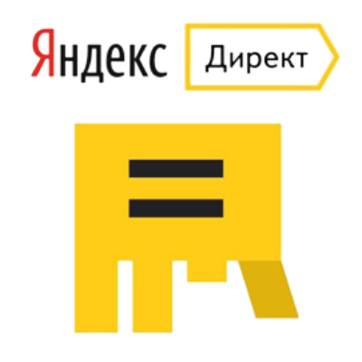

Маркетолог. Работаю в маркетинге с 2018 года.
Есть опыт ведения бизнеса - была свой спортивный клуб.
Технократ.
Регулярно профессионально развиваюсь. Для расширения кругозора изучаю
разные технологии. Не только касаемо маркетинга, но и других сфер.
Использую полученные знания и опыт в работе.
Сначала работал на фрилансе, осваивал инструменты интернет-маркетинга, затем перешел в штат.
На фрилансе работал с нишами: недвижимость, производство одежды, прода запчастей для спецтехники, мобильные приложения, телемедицина, продажа приборов для геологов.
Работал в трех компания: консалтинг в фитнес индустрии, IT - аутсорсинг, Продажа и прозводство гидравлических линий з комплектующих.
Умею
Читаю техническую документацию. Умею находить информацию. Умею
работать с большим объемом информации.
Если в чем-то не разбираюсь или не понимаю, и это что-то можно изучить
по книжкам, статьям, гуглом и ютубом - то я в этом разберусь.
Умею адаптироваться.
Проектировать сайты с точки зрения семантической структуры. Собирать
семантическое ядро. Настраивать контекстную и таргетированную рекламу.
Знаю рекламные кабинета Яндекса, гугла, фейсбука, вконтакте,
майтаргета. Работаю с ситемами аналитики яндекс метрика, гугл
аналитикс, гугл тег менеджер.
Понимаю в SEO. Контекстная реклама, реклама в соц.сетях.
Инструменты и технологии


Изучаю
OSINT - мотодология информационной разведки на основе не закрытых
источноков.
Программирование. Языки:
- Python
- JavaScript
- SQL
- HTML&CSS - язык разметки.
ТРИЗ - методология создания изобретений и решения разных задачь.
Была разработана советским ученым-инжинером - Генрихом Айшуллером.
ТОС - методология, суть которой лежит в поиске, и устранении
ограничения любой работающей системы.
Создана экономистом Элияху Голдраттом.
Data Engineering
Экономику
Статистику
Математику
Увлечения
Веду активную жизнь - занимаюсь экстремальным спортом:
- Сноубординг
- Скалолазанье - для души, но иногда участвую в фестивалях.
- Велосипед - рекорд за раз 140 км
-
Ролики - занималься профессионально, участвовал в
соревнованиях,тренировал спортсменов, учил кататься
- Коньки - участвовал в Red bull crashed ice
Читаю, когда есть свободная минутка. Большой список книг :).
Список пополняется.
Информационная безопасность.
OSINT
Обучение и прокачка скилов.
Популярной наукой.
Опыт работы
Работал в строительстве и монтаже - там научился читать и составлять
чертежи и проектную документацию.
Имеется опыт создания бизнеса. После закрытия перешел в маркетинг.
В маркетинге регулярно прокачиваюсь, начав с продвижения, перешел к
изучению основ.
Пришел к пониманию того, что часто полноценную маркетинговую стратегию
не выстроить, если не изменять бизнес-процессы.
А без полноценной оцифровки происходящих процессов в компании, не
провести цифровую трансформацию бизнеса.
Т.е. не возможно выстроить полноценную аналитику всего что происходит
в компании.
{kind=link}
{kind=link}
{kind=link}
{kind=link}